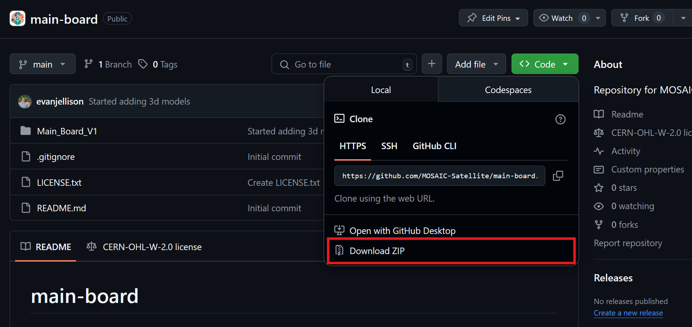
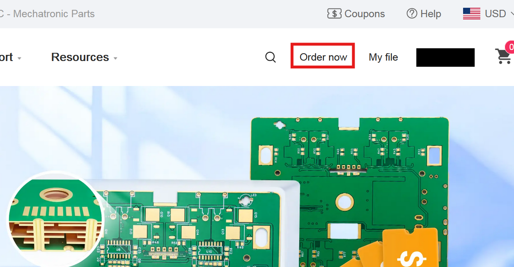
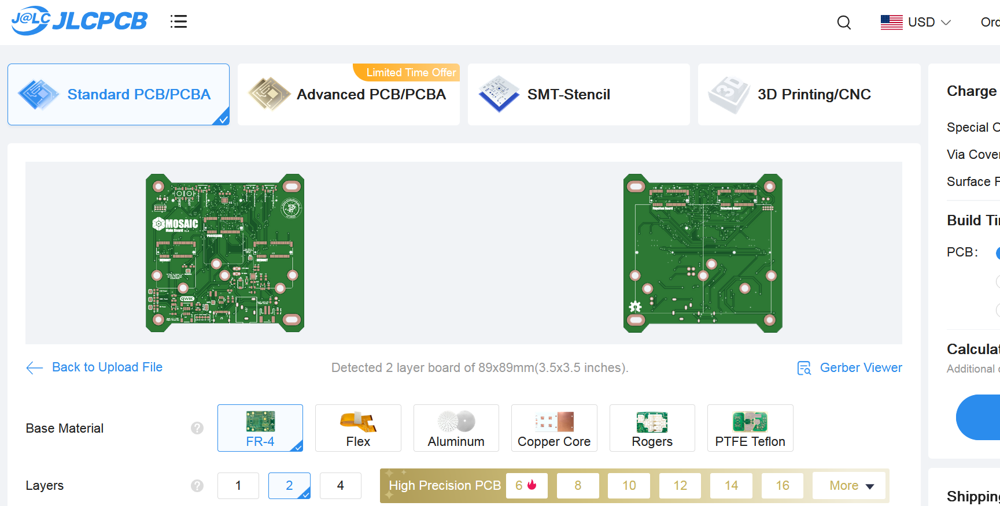
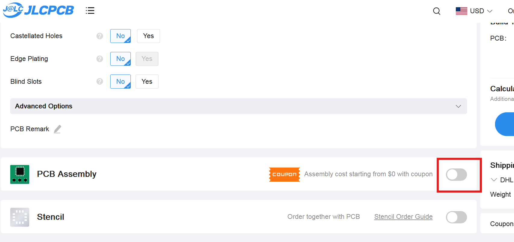
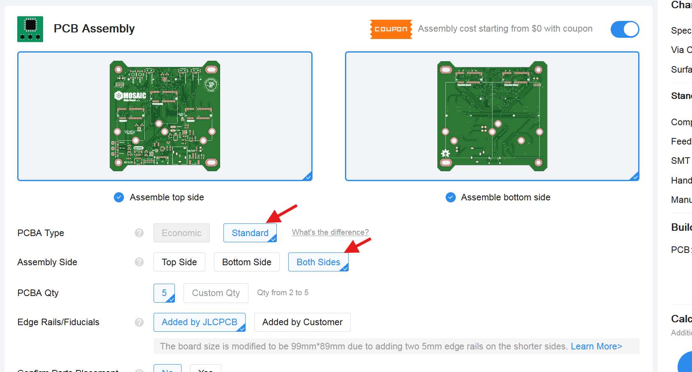
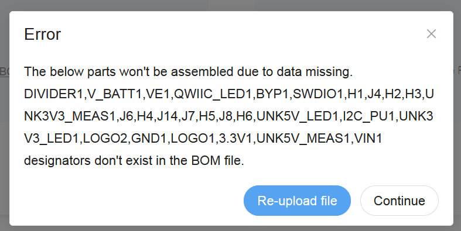
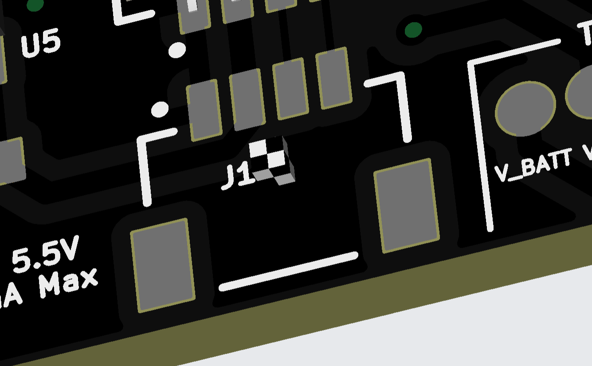

There are three main printed circuit boards (PCBs) that make up the core of the MOSAIC system. You can learn more about these boards in the MOSAIC elements page of this site.
This first step in the MOSAIC self-assembly guide walks you through setting up a PCB manufacturer to fabricate and assemble all three core MOSAIC boards and other MOSAIC modules.
Tools Needed
Computer (it's not recommended to do this step on a phone or tablet)
Time to complete
~ 30 min.
Estimated Cost
~ $250*
*Cost can vary due to different shipping locations and PCB manufacturer pricing for destination country.
Difficulty
Easy
I. Getting the necessary files
All MOSAIC files are hosted on the MOSAIC GitHub organization. Each of the three MOSAIC PCBs has its own GitHub repository. You will need to get files from each of these repositories. Follow the steps below to complete this task.
Click on the green <> Code button next to the "About" section of the repository, then click Download ZIP (Figure 1). This will download the entire repository in a ZIP folder.

Figure 1: Where to find the "Download ZIP" button (red box)
Unzip (extract) the folder to any location on your computer.
Now let's get things ready to have a PCB manufacturer fabricate and assemble the MOSAIC boards.
What PCB manufacturer should I use?
All MOSAIC boards are designed to be manufactured and assembled by JLCPCB, a PCB manufacturer based in China. This includes all components (resistors, chips, etc.) that will be assembled onto the boards by JLCPCB, so you don't have to.
The following guide is for creating MOSAIC boards fabricated by JLCPCB, but you don't need to use them if you don't want to. Please note that if you choose to have your boards manufactured and assembled by a different company, you will need to source all the board components from an alternative supplier.
The bill of materials (BOM) for components used by each board can be found in the board's repository within the production folder.
III. Set up Main Board for fabrication and assembly
While logged in on JLCPCB's website, click the Order now button on the site's homepage (Figure 2).

Figure 2: Where to find the "Order now" button (red box)
Click on the Add gerber files button. This will open your computer's file explorer.
What are gerber files?
A Gerber file is a standard file format used in PCB manufacturing to represent the design data for each layer of the board. Essentially, it's a blueprint that tells the PCB manufacturer how to create the physical board, including copper traces, solder masks, and silkscreen layers.
Locate and open the MOSAIC_Main_Board_1.0 zipped folder in the extracted Main Board repository folder from step I above, found within: main-board-main\Main_Board_V1\production. You should see a rendering of both sides of the Main Board once this file has finished uploading. (Figure 3)
Don't unzip the MOSAIC_Main_Board_1.0 folder
You should not unzip the MOSAIC_Main_Board_1.0 found within main-board-main\Main_Board_V1\production. JLCPCB's website requires a zipped folder uploaded to their website containing the Main Board's gerber files.

Figure 3: Rendering of Main Board after uploading the gerber files
None of the options found under the board rendering need to be changed. However, you can customize your board by changing its PCB Color if you'd like.
How many boards to order
The minimum quantity of boards you can order from JLCPCB is 5. This doesn't mean all five of these boards will be assembled with components by JLCPCB. You will have the option to choose how many are assembled in the following steps. The remaining of the 5 will be blank boards. (e.g., you set PCB Qnt to 5 and set PCBA Qnt (see below) to 2. This means you will receive 2 assembled boards and 3 blank boards).
At the bottom of the page, click on the slider for the PCB Assembly option (Figure 4).

Figure 4: Turn on the option for PCB assembly (red box)
Under the PCB Assembly option, make sure to set the PCBA Type to Standard and the Assembly Side to Both Sides (Figure 5).

Figure 5: Set these options for PCB assembly
Choose the number of boards you would like to be assembled with components under the PCBA Qnt option. The minimum boards you can have assembled is 2.
Click the Next button on the right of the page.
You will be directed to a top and bottom view of the board. Click the Next button to continue.
In the same production folder from step 3 above, there are two .csv files named bom and positions. Upload the bom.csv file where it says Add BOM File and upload the positions.csv file where it says Add CPL File (Figure 6). Then click the Process BOM & CPL button.
Figure 6: Where to upload the BOM and Positions files found in the main-board-main\Main_Board_V1\production folder
Potential error
You may encounter the following error after clicking Process BOM & CPL. You can ignore this error and click Continue to continue.

On the next page, ensure that all check boxes on the right side are selected (including those with an exclamation mark next to them), then click Next.
The next page will display a 2D/3D rendering of the board, showing all components that JLCPCB will assemble. The files you uploaded previously have the positions that all components are supposed to have on the board, but it's always a good idea to thoroughly inspect the board to ensure everything is in the correct location. If anything appears to be misaligned, click on the component, then use the tools and your keyboard's arrow keys to position it correctly. Click Next to continue.
Missing models
Some board components may be missing 3D models. This means you will see a checkered box where the component model would be (see image below). This is ok and can be ignored.

Review the quote and order on the next page then click Save To Cart.
Don't purchase yet!
Don't purchase the boards yet! If you're planning to get a MOSAIC Power Board and ProtoBoard, wait to purchase the Main Board until the two others are in your cart—this way, you pay for shipping for all boards at once instead of separately.
IV. Set up Power Board for fabrication and assembly
The power board is set up with JLCPCB in the same way as the Main Board above. Follow the same steps for the Main Board, but substitute the files from the Power Board repository you downloaded.
V. Set up ProtoBoard for fabrication
The ProtoBoard will not have any components on it to be assembled by JLCPCB. For the ProtoBoard, you only need to follow steps 1 - 4 of the Main Board, using the files specific to the ProtoBoard. Once you complete step 4, click Save To Cart on the right side.
VI. Set up memory module(s) for fabrication and assembly
It's recommended that you have at least one memory module for your MOSAIC satellite. These modules are expandable memory that plug into the two available slots on the Main Board and are essential for storing your satellite's sensor data.
MOSAIC's memory modules are all proprietary to the MOSAIC system. This means they cannot be ordered from a third-party distributor and will need to be fabricated in a manner similar to the other MOSAIC boards mentioned above.
Be sure to follow these steps carefully
Even though these memory modules are fabricated similarly to the other boards on this page, there are some differences in the steps involved in their production. Please carefully follow the steps below to avoid any mistakes!
Visit the memory modules GitHub Repository. Click on the green <> Code button next to the "About" section of the repository, then click Download ZIP (Figure 7). This will download the entire repository in a ZIP folder.
Figure 7: Where to find the "Download ZIP" button (red box)
Unzip (extract) the folder to any location on your computer.
This repository contains files for all memory modules available for MOSAIC and template files for designing your own. Open the folder for the memory module(s) you want to fabricate.
Which memory module should I choose?
This decision is based on the needs of your satellite. If you're new to satellite design or MOSAIC, then a sound module to start with would be the "I2C_fram_memory_module."
Follow the same steps 1-3 for fabricating MOSAIC's Main Board above using the production files found in the folder of the memory module you chose.
Keep all options found under the board rendering the same except for PCB Thickness. Change the value for PCB Thickness to be 0.8mm. (Figure 8)
Don't miss this step!
You must change PCB thickness to be 0.8mm. Otherwise, your memory module will not fit into its designated slots on MOSAIC's Main Board.
Figure 8: Where to change the PCB thickness to 0.8mm (red box)
Follow the same steps 5-13 for fabricating MOSAIC's Main Board above to finish setting up your memory module(s) and saving them to your cart.
VII. Order the Boards!
Now that you have the boards you need in your cart, it's time to order them!
Click on the cart icon at the top right of the screen. Make sure to select all the boards with the check boxes on the left then checkout!